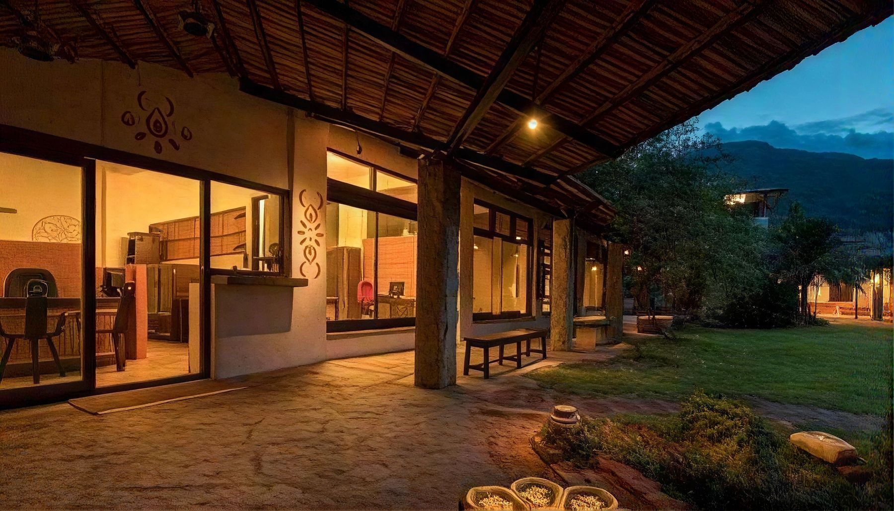
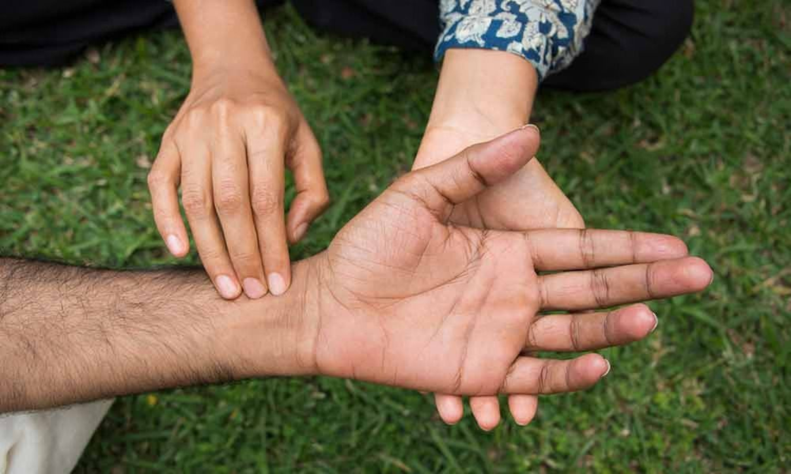
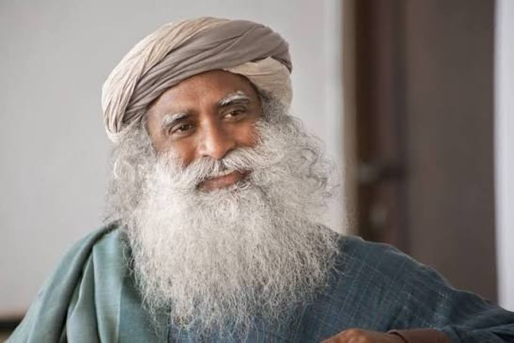

A More Thoughtful Approach to Your Health
Discover our 4 signature health programs—bringing together complementary care systems to deliver targeted recovery and long-term vitality.

Where our expertise delivers the greatest impact
Explore our primary specialized programs. Each flagship program combines expert doctor consultations, specialized therapies, and lifestyle protocols tailored to your health needs.
Looking for support with another condition?
While these are our four primary specializations, our clinical team evaluates and supports a wide spectrum of health challenges.
Explore Now
Four Pillars of our Treatment process
Every successful program integrates four distinct clinical systems working in synergy to accelerate recovery and ensure long-term vitality.
How Your Journey Looks Like
From your first conversation to lasting health, our doctors walk with you.
Healing stories from those we’ve supported
Real journeys from people who found their way back to health.
Guided by Experience. Focused on Your Wellbeing.
Our practitioners come from different systems of medicine, but share one approach: understand the person first, then decide what care they truly need.
01
A Closer Look at Our Healing Environment
The environment is part of the care, not an addition to it: quiet, unhurried, and built for rest. Turn the map to see how the centre is laid out, then step inside any building and look around.
01 / 05 · The map
The groundsFour buildings, one campus
Treatment blockOpen a marker to see what you are looking at
The Thinking Behind Our Integrated Approach
At IHS, Healing is not just about managing symptoms—it's about creating lasting wellbeing. Guided by Sadhguru's vision, Isha Health Solutions brings together modern medicine, Ayurveda, Siddha, Yoga, and conscious living to help you restore balance, recover naturally, and lead a healthier life.

Let's Understand Your Health Needs
Not sure where to begin? Share your details and our team can help you understand the next steps.
Insights for your health journey
Read how our physicians think about the conditions we treat.